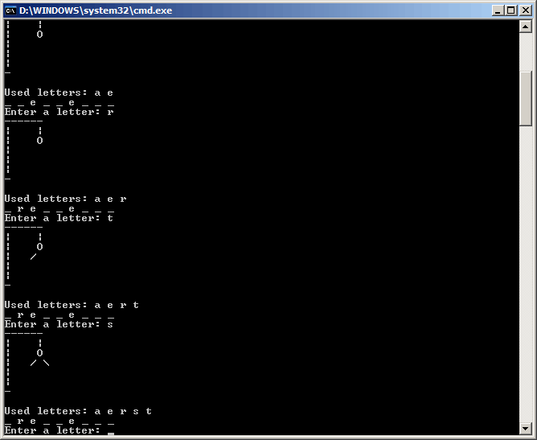

Machine Problem 1: Hangman
| Assigned |
Thursday, January 26, 2006 |
| Due Date |
Wednesday, February 8, 2006, 5:00 P.M. |
| Purpose |
Learn to write assembly code. Use loops and branching. Perform basic string operations. |
| Points |
60 |
Introduction
Hangman is a simple word-guessing game. Implementing a basic hangman game in assembly will introduce
you to the basics of writing assembly code, as well as preparing you to write more complicated programs
in later MPs. A full listing of the program and a Makefile are given at the end of this assignment. Electronic
copies of the program are available in the lab or on-line as
mp1.zip.
Problem Description
In Hangman, the user is presented with an unknown word, consisting of all underscore ('_') characters.
The object of the game is to guess every letter in the word. However, each time the user guesses a
letter that is not in the word, part of the hangman is drawn to the gallows. If the entire hangman is drawn
to the gallows (head, left arm, right arm, left leg, and right leg), the user loses and the hangman is hung.
If the user can guess all of the letters in the word while making fewer than 5 wrong guesses, the user wins.
In our implementation of Hangman, there are a few key issues and variables:
- Strings
In assembly, strings are just a series of bytes of ASCII characters. The lib291
string-display function, dspmsg, uses a '$' character to mark the end of a string. For example, the string
'ECE390$' would be a seven-byte string - one byte each for 'E', 'C', 'E', '3', '9', '0', and the end-of-string
character '$'.
- The WordSpace and TheWord variables
TheWord is a string variable storing the word that the user is trying to guess. For simplicity, it is a static variable -
the word will not change each time you run the program. If you want to use a different word than the default, you may
change the word in your source .asm file, but make sure to keep it under 20 characters. WordSpace is a 20-byte string
for you to store your 'word-in-progress'. In the Init function, you should set up WordSpace to have as many underscore
characters as TheWord has letters. As the user correctly guesses letters, these letters will replace the underscores in WordSpace.
- The UsedLetters array
To keep track of which letters have already been guessed, we will use a 26-byte array called UsedLetters. Each byte-sized
element of this array corresponds to a letter in the alphabet - element 0 corresponds to 'a', 1 corresponds to 'b', and so on. Each
byte acts as a flag: if the byte corresponding to a letter has a 0, that letter has not been guessed. If the byte has a 1, that letter
has been used.
Screen Dump
The following screen capture depicts ECE291 Hangman during game play:

MP1 Program Assignment
There are seven subroutines in this machine problem: MAIN, Init, Processchar, DisplayWord, DisplayUsed, CheckWinner, and DisplayGallows.
Subroutines MAIN and DisplayGallows have been provided for you. Your will complete all other subroutines by replacing the CALL statments
in mp1.asm with your own code. Each subroutine should match the output of the library code exactly. Each of the subroutines and their
functionality is described below in the Subroutines section. The best way to get a feel for the program is to run mp1 to see how it operates.
The program can be run by typing mp1 at the command prompt.
Your program is required to:
- Process each character that the user guesses appropriately
- Display the word-in-progress and list of already-guessed letters correctly
- Determine whether the user has won or lost
- Run efficiently. Points will be deducted for inefficient algorithms and/or excessive coding.
Brief Intro to PUSH and POP
- Pushing and poping are stack operations and will be covered later in lecture.
- PUSHA will record onto the stack a copy of the data in all of the CPU's registers. POPA removes the data from the stack and copies it back to the registers.
- Pushing and popping is, among other things, used to ensure that a called function doesn't scramble registers that the calling function uses.
- You can push and pop individual registers with instructions like push ax and pop cx. PUSHA and POPA save all of the registers to the stack. Pushing and
popping individual registers is the preferred method of saving/restoring register data when calling a function. PUSHA and POPA are used here for simplicity.
Hints
- The LIBMP1 file contains executable library functions for each of the subroutines that you need to implement. This allows you to run the program and
understand how it works before you implement it. You can test your program with any combinations of your own code and library functions. You will only receive
credit, however, for the subroutines that you implement yourself.
- The DisplayGallows function has been written for you. You can use it as a model to see how to write and comment your own assembly functions.
- Check out Chapter 9 in your lab manual for descriptions and documentation for the lib291 functions dspout and dspmsg. These functions are used for
displaying a character and a string to the screen, respectively.
- You may define new variables as needed.
- START EARLY! This is the first MP that requires you to write your own program. Composition is much more difficult than comprehension.
- Monitor the Web Board for clarifications and help.
Subroutines
In this assignment, you will need to complete five procedures. You will receive credit by replacing each of these five procedures listed below with your own code.
Document your functions with descriptive function headers. Look in your lab book for examples or ask a TA. YOU WILL LOSE POINTS IF YOU DON'T WRITE CLEAR, CONCISE FUNCTION HEADERS!!!!
| Init |
- Sets up the WordSpace variable to have as many underscores as TheWord has letters.
- Inputs:
- The WordSpace and TheWord variables
- Outputs:
- WordSpace is set up properly
- Calls: None
- Note: Remember that all strings should end with the '$' character.
|
| ProcessChar |
- Checks the character that the user has guessed to see if it matches any letters in TheWord, and takes the appropriate action.
- Inputs:
- AL = Character that the user has just guessed
- The WordSpace and TheWord variables
- The UsedLetters array
- The NumIncorrect variable
- Outputs:
- The correct element in UsedLetters is marked as 'used'
- WordSpace is updated if the character matches
- NumIncorrect is updated appropriately if the character doesn't match.
- Calls: DSPMSG, DSPOUT
- Notes: ProcessChar should first check to see if the character in AL is in the range 'a' through 'z'. If it is not, output an error message and return.
If it is within that range, check to see if that letter has already been guessed by checking the appropriate entry in UsedLetters. If it has been used,
display the character on the screen, output an error message and return. If the letter hasn't been used, update UsedLetters array, scan through each
character in TheWord and check for matching characters. If any characters match, copy them to the corresponding place in WordSpace. If no
characters match, update NumIncorrect appropriately.
- Hint: Either the "register relative" or "base plus index" addressing modes are useful in this function. Review your online lecture notes for more information on memory addressing.
|
| DisplayWord |
- Displays the word-in-progress
- Inputs:
- Outputs:
- The word-in-progress is displayed to the screen with a space between each character
- Calls: DSPOUT, DSPMSG
- Note: If you're unclear on what to display, run the program or take a look at the screenshot to see exactly how to display the word.
|
| DisplayUsed |
- Displays a list of already-guessed letters
- Inputs:
- Outputs:
- Calls: DSPOUT, DSPMSG
- Notes: Loop through the UsedLetters array looking for 1's. If/when you find a 1, display the corresponding character.
|
| CheckWinner |
- Determines if the user has won or lost.
- Inputs:
- The NumIncorrect variable
- The WordSpace variable
- Outputs:
- Sets the Status variable to 1 if the user has won, -1 if the user has lost, or 0 if the user hasn't won or lost (i.e. the user should keep playing).
- Calls: None
- Notes: First, check NumIncorrect. Then, scan WordSpace looking for underscore characters.
|
Procedure
- You will begin this MP with the following files:
- MP1.ASM: Program Framework
- Makefile: Specifies how and when programs are assembled and linked.
- LIBMP1.LIB: Library functions for MP1
- LIB291.LIB: General-purpose library functions
- You may copy these files from the network drive to your home directory with the following command:
xcopy /s V:\ece390\mp1 W:\mp1
or download the files from this server as mp1.zip
- Add your code to MP1.ASM.
- Assemble and link your program by typing
make
This command reads Makefile then invokes NASM and TLINK to build an executable program.
- Use Turbo Debugger (TD) to find and correct program errors.
- Verify your program operation by playing the game and checking all cases.
Final Steps
- Prepare a cover memo addressing the following questions:
- How much time did you spend on each subroutine, from planning and design through final debugging?
- What kinds of defects (bugs) did you find during the development of the program? When did you discover these defects (during code review or during testing)? How did you find them?
- What did you learn about design, coding, testing, and debugging in this MP?
- What went well in your work on this MP? What did not?
- What you would do differently for the next MP?
- Demonstrate your MP1.EXE to a TA or to the instructor. The TA or instructor will verify that your program works as intended.
- Be prepared to answer questions about any aspect of the operation of your program. The TAs will not accept an MP if you cannot fully explain the operation of your code and details of your implementation. Delayed MPs will be subject to late penalties as described in the course syllabus (10%/day).
- The TA will handin your MP and cover memo online.
mp1.asm
; MP1 - ECE390 Hangman
; Your Name
;
; Spring 2006
; University of Illinois, Urbana-Champaign
; Dept. of Electrical and Computer Engineering
;
; Version 1.0
BITS 16
;====== SECTION 1: Define constants =======================================
CR EQU 0Dh
LF EQU 0Ah
ESC EQU 01Bh
SPACE EQU 020h
HEAD EQU 04Fh
LEFTLIMB EQU 02Fh
RIGHTLIMB EQU 05Ch
ASCII_a EQU 061h
;====== SECTION 2: Declare external routines ==============================
; Declare external library routines
EXTERN kbdine, dspout, dspmsg, dosxit
EXTERN libInit, libProcessChar, libDisplayWord, libDisplayUsed
EXTERN libDisplayGallows, libCheckWinner, mp1xit
; Declare local routines
GLOBAL Init, ProcessChar, DisplayWord, DisplayUsed
GLOBAL DisplayGallows, CheckWinner
; Make program variables global
GLOBAL CRLFString, WelcomeString, PromptString, NotValidString, UsedString
GLOBAL WinString, LoseString, AlreadyUsed, AlreadyUsedEnd
GLOBAL GallowsTop, GallowsSide, GallowsBottom
GLOBAL NumIncorrect, TheWord, UsedLetters, WordSpace, Status
;====== SECTION 3: Define stack segment ===================================
SEGMENT stkseg STACK ; *** STACK SEGMENT ***
resb 64*8
stacktop:
resb 0 ; work around NASM bug
;====== SECTION 4: Define code segment ====================================
SEGMENT code ; *** CODE SEGMENT ***
;====== SECTION 5: Declare variables for main procedure ===================
; Some useful strings
CRLFString db CR,LF,'$'
WelcomeString db CR,LF,'Welcome to ECE390 Hangman!',CR,LF,'$'
PromptString db CR,LF,'Enter a letter: ','$'
NotValidString db CR,LF,'That is not a valid letter.',CR,LF,'$'
UsedString db CR,LF,'Used letters: ','$'
WinString db CR,LF,'You Win!!!',CR,LF,'$'
LoseString db CR,LF,'You Lose :(',CR,LF,'$'
AlreadyUsed db CR,LF,'You have already used the letter ',027H,'$'
AlreadyUsedEnd db 027h,'.',CR,LF,'$'
; Strings to draw the hangman
GallowsTop db '------',CR,LF
db '| |',CR,LF,'$'
GallowsSide db '| ','$'
GallowsBottom db '|',CR,LF
db '-',CR,LF,'$'
; NumIncorrect keeps track of how many incorrect guesses the user has made
NumIncorrect db 0
; TheWord is the word the user is trying to guess
TheWord db 'frequency','$'
UsedLetters times 26 db 0
WordSpace times 20 db '$'
Status db 0
;====== SECTION 6: Program initialization =================================
..start:
mov ax, cs ; Initialize Default Segment register
mov ds, ax
mov ax, stkseg ; Initialize Stack Segment register
mov ss, ax
mov sp, stacktop ; Initialize Stack Pointer register
;====== SECTION 7: Main procedure =========================================
MAIN:
mov dx, WelcomeString ; Display welcome message
call dspmsg
call Init ; Set up the WordSpace variable
.InputLoop:
call DisplayGallows ; Draw the hangman
call DisplayUsed ; Display used letters
call DisplayWord ; Display the word in progress
mov dx, PromptString
call dspmsg
call kbdine ; Input a character from the keyboard
; into al
mov dx,CRLFString
call dspmsg
cmp al,ESC ; If it's an ESC character,
je .End ; exit immediately
call ProcessChar
call CheckWinner
cmp byte[Status],0
js .Lose ; js = jump sign. If Status is signed,
; e.g. a negative number, the user has lost
je .InputLoop ; If Status is equal to zero, keep playing
.Win ; If Status is neither -1 nor 0,
call DisplayGallows ; we assume it must be 1, so the user has won
call DisplayUsed
call DisplayWord
mov dx,WinString
call dspmsg
jmp .End
.Lose
call DisplayGallows
call DisplayUsed
call DisplayWord
mov dx,LoseString
call dspmsg
.End
call mp1xit
;====== SECTION 8: Your subroutines =======================================
;====== Init ==============================================================
Init:
call libInit ; call to library function Init
; comment out call to library and add your code
ret
;====== ProcessChar =======================================================
ProcessChar:
call libProcessChar
ret
;====== DisplayWord =======================================================
DisplayWord:
call libDisplayWord
ret
;====== DisplayUsed =======================================================
DisplayUsed:
call libDisplayUsed
ret
;====== CheckWinner =======================================================
CheckWinner:
call libCheckWinner
ret
;====== DisplayGallows ====================================================
; PURPOSE: Draws the hangman to the screen
; INPUTS: The NumIncorrect variable
; OUTPUTS: The hangman is drawn correctly, according to how many wrong
; guesses the user has made
;==========================================================================
DisplayGallows:
pusha ; Save all register values to the stack, since
; we change some of their values in this function
mov dx,GallowsTop ; Display the top of the gallows
call dspmsg ; dspmsg takes the address of a string in dx
mov dx,GallowsSide
call dspmsg
cmp byte[NumIncorrect],1 ; If there are one or more incorrect
jb .NoHead ; guesses, we draw the head
; jb = jump below
mov dl,SPACE
call dspout ; dspout takes the ASCII character to output in dl
mov dl,HEAD
call dspout
.NoHead
mov dx,CRLFString ; CRLFString puts us at the beginning
call dspmsg ; of a new line
mov dx,GallowsSide
call dspmsg
cmp byte[NumIncorrect],2 ; If there are two or more incorrect
jb .NoLeftArm ; guesses, we draw the left arm
mov dl,LEFTLIMB
call dspout
mov dl,SPACE
call dspout
.NoLeftArm
cmp byte[NumIncorrect],3 ; Three or more incorrect guesses,
jb .NoRightArm ; draw the right arm
mov dl,RIGHTLIMB
call dspout
.NoRightArm
mov dx,CRLFString ; New line
call dspmsg
mov dx,GallowsSide
call dspmsg
cmp byte[NumIncorrect],4 ; Four or more, draw the left leg
jb .NoLeftLeg
mov dl,LEFTLIMB
call dspout
mov dl,SPACE
call dspout
.NoLeftLeg
cmp byte[NumIncorrect],5 ; Five or more, draw the right leg
jb .Done
mov dl,RIGHTLIMB
call dspout
.Done
mov dx,CRLFString ; Draw the bottom of the gallows
call dspmsg
mov dx,GallowsBottom
call dspmsg
popa ; Restore register values from the stack
ret
Makefile
MPNAME=mp1
all: $(MPNAME).exe
clean:
rm -f $(MPNAME).exe $(MPNAME).obj $(MPNAME).lst $(MPNAME).map
%.exe: %.obj
tlink /c /v $<, $*.exe, $*.map, libmp1.lib lib291.lib
%.obj: %.asm
nasm -g -f obj -o $*.obj $< -l $*.lst
|